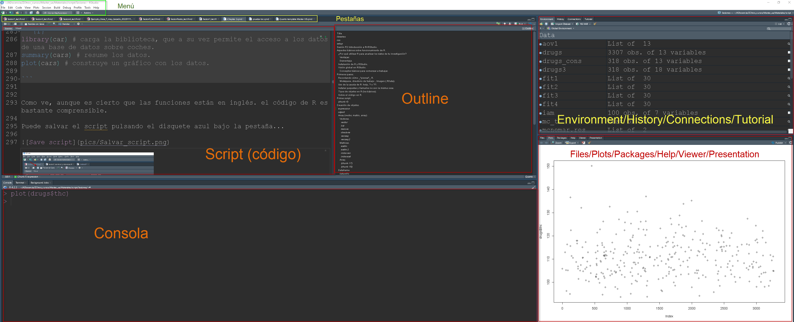
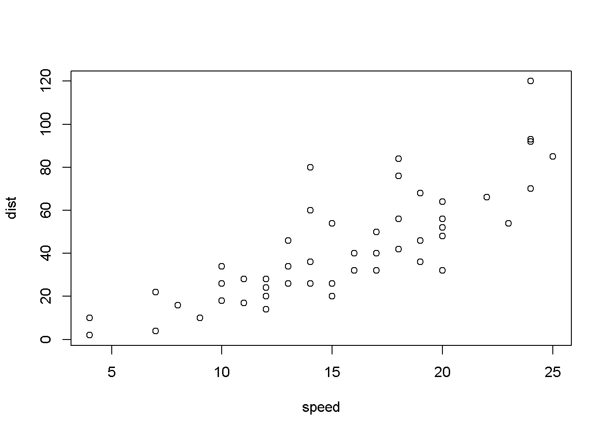
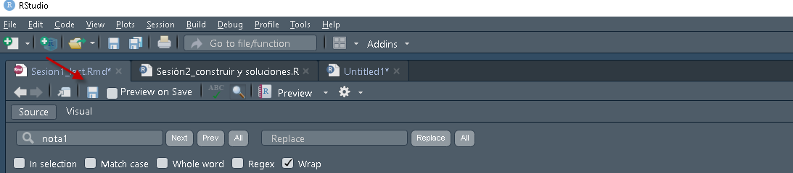
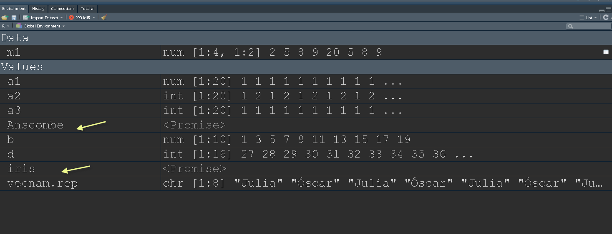
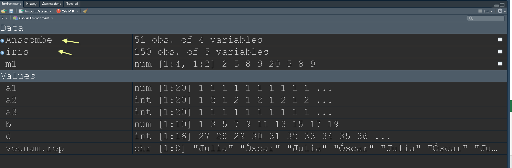
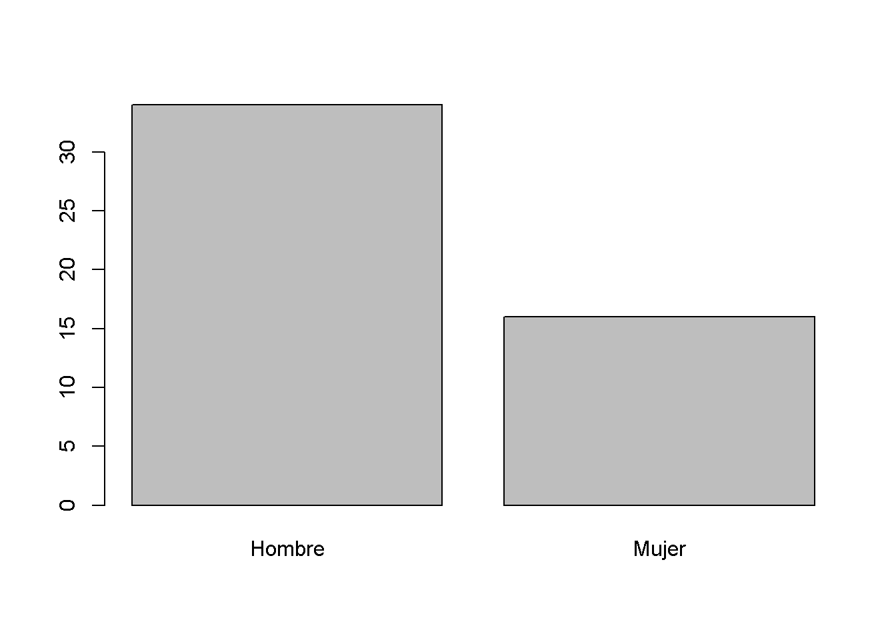
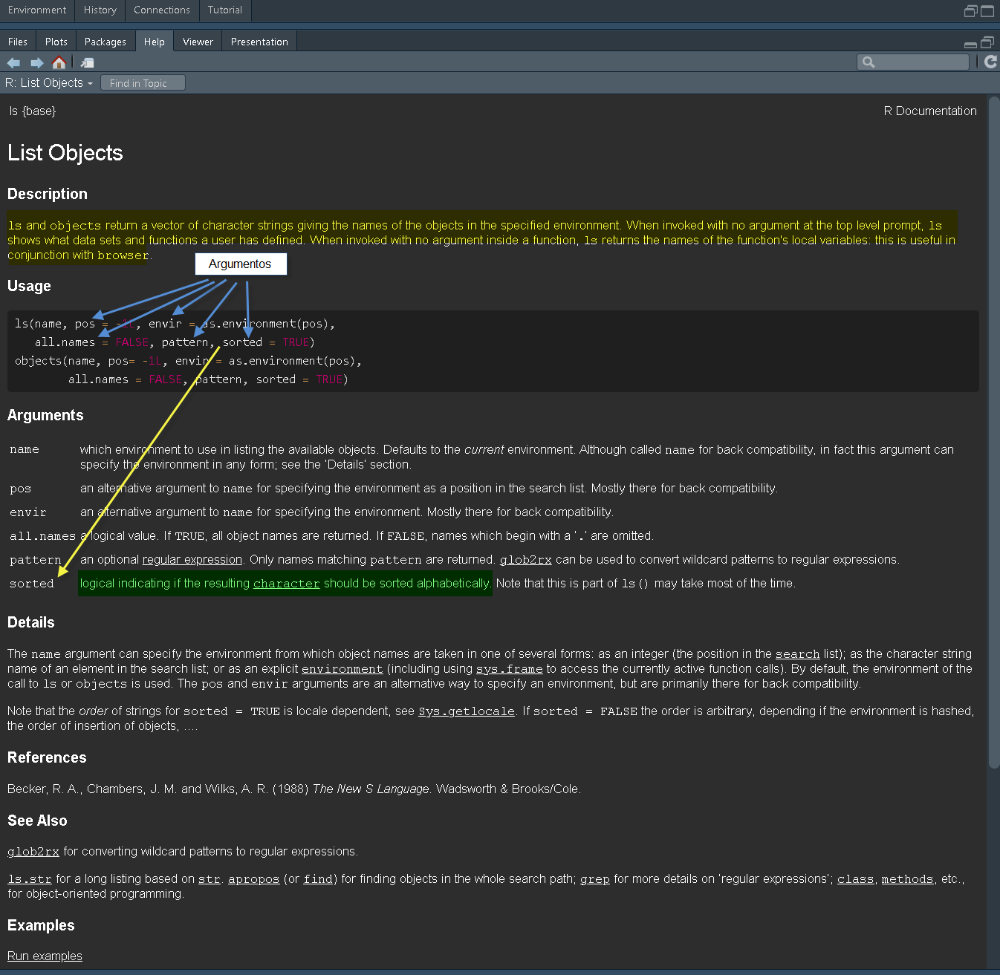

2 PR1-Introducción a R y RStudio.
3 Introducción a R+RStudio.
Este documento no aborda aspectos como la instalación de R y RStudio, aspectos bien cubiertos en muchos otros recursos, algunos mencionados en la bibliografía.
El siguiente esquema trata de representar el flujo de trabajo habitual en cualquier proyecto de data science independientemente de su envergadura.
En la preparación de cualquier trabajo de investigación en el que nosotros nos encarguemos del análisis pasaremos por todas, o casi todas, estas fases.
En sentido estricto, el análisis estadístico sería el ciclo Transform-Visualise-Model, pero es imposible llegar a estas fases si no se completan los pasos anteriores.
Por otro lado, sería extraño realizar un análisis para no comunicarlo, por lo que, aunque las siguientes notas no siguen exactamente este esquema, es importante tratar de pensar a qué fase corresponde todo lo que veremos en la parte práctica.

3.1 ¿Por qué utilizar R para analizar los datos de tu investigación?
3.1.1 Ventajas:
- Código vs. ventanas. (En realidad, SPSS, Stata, SAS… también se pueden utilizar usando código)
- Reproducibilidad (interna y externa).
- Replicabilidad.
- Velocidad.
- Ayuda de la comunidad (software libre).
- Multitud de recursos.
- Nadie te acusará de estar pirateando software.
- Una vez conoces los fundamentos, puedes crecer lo que desees.
3.1.2 Desventaja.
- Curva de aprendizaje lenta en comparación con las ventanas.
3.2 Instalación de R y RStudio.
Es conveniente instalar R y luego RStudio.
- Instalar R desde aquí: https://cran.r-project.org/
- Instalar RStudio Desktop desde aquí: https://posit.co/downloads/
Para detalles sobre la instalación y otros aspectos básicos, este recurso creado por Anabel Forte Deltell (más conocida como BayesAna)  es un buen punto de arranque.
es un buen punto de arranque.
3.3 Trabajando con R+RStudio.
3.3.1 Conceptos básicos para comenzar a trabajar .
Aunque no en este orden, repasaremos todos estos conceptos durante la sesión.
No hace falta que los memorices ahora. Se trata de conceptos que irás incorporando mientras practicas con RStudio.
- Workspace, directorio de trabajo , Imagen (.RData).
- Paneles: Console, Script,Environment/History/Connection/Tutorial .
- Métodos abreviados de teclado útiles. Ctrl+Intro, Ctrl+Shift+C, Ctrl+Shift+N…
- Cómo instalar bibliotecas (library).
- Cómo abrir o llamar a una biblioteca: require(), library().
- Cómo llamar a las funciones de una biblioteca (la posición de los argumentos es relevante).
- Organización del script: Comentar, Outline, ejecución de líneas.
- Cómo pedir ayuda en Rstudio y en internet.

3.3.2 Primeros pasos.
3.3.3 Recordando cómo “piensa” R.

3.3.4 Uso de la ayuda de R: help, ? o ??.
- help.start() #Abre el navegador (solo si tenemos la ayuda html instalada)
- help.search(“normal”) # Busca términos relacionados.
Cómo consultar la ayuda de R:
- ? Consulta de ayuda para funciones.
help(stats) es lo mismo que ?stats.
?? busca el texto texto en las páginas de ayuda ??stats.
Si se trata de caracteres o de expresiones reservadas porque se utilizan en operaciones básicas (como +) o en el interior de otras funciones s (como if ), es necesario rodear la expresión con “” para que devuelva la ayuda.
Correcto help(“if”) o ?“if” vs. Incorrecto: help(if) p ?if
3.3.5 Instalar paquetes y llamarlos no son la misma cosa.
Cuando explico este tema, suelo utilizar el ejemplo que sugieren los nombres que vamos a utilizar, solo que en otro contexto.
Instalar la librería (install.packages(‘library_name’)) significa ir a la tienda y comprar la biblioteca (library) con los libros incluidos.
Cargarla (library(library_name)) o llamarla (require(library_name)) sería equivalente a abrir la librería y ponerla a disposición del usuario.
Llamar a una de las funciones que contiene sería equivalente a utilizar uno de los libros (function_name(args,…)), libro que puedo usar de muchas formas, siempre que conozca los los argumentos para poder hacerlo de la forma que yo deseo.
Nota:
- Aunque no son exactamente lo mismo, escuchará library, biblioteca o paquete para referirse a estas bibliotecas (traducción al español de library).
- Para utilizar las funciones anteriores, deberá sustituir library_name por el nombre de la biblioteca (library) que corresponda, y function_name por la función de dicha librería que desee utilizar.
Instalar un paquete implica copiar una serie de archivos en su ordenador en una carpeta ubicada en un subdirectorio bajo la carpeta de R, es decir es un hecho físico constatable.
Nota: Se puede cambiar la ubicación pero de momento recomendamos que deje a R instalarlos en la ubicación por defecto que contiene todas las bibliotecas [libraries]. Para ver qué librerías tenemos instaladas, podemos utilizar la función installed.packages(). Verá que pueden estar en diferentes ubicaciones.
Cargar la librería es ponerla en una zona de memoria que la hace disponible, de forma que basta con llamar a las funciones. En realidad se puede llamar a las funciones sin cargar la librería, pero deberemos llamarla cada vez que ejecutemos una de las funciones que contenga. Para esto se usa la expresión library_name::function().
3.3.6 Tipos de objetos en R (los básicos).
Escalar.
Array: Agrupación multidimiensional de vectores. Todos elementos del mismo tipo.
Vectores: Numéricos, Lógicos, Cadenas, Factores. Como es Array->todos elementos del mismo tipo
Matrices (matrix). Array de dim=2. Como es Array->todos elementos del mismo tipo.
dataframes (data.frame). Matrices que pueden contener elementos de varios tipos, pero todos de la misma longitud.
Listas (list). Elementos puedes ser de diferentes tipos y longitudes.
Funciones (function): conjunto de código de R ejecutable y parametrizable.
Nota: Todos los objetos tienen atributos length y mode. Los arrays además tienen dim.
3.3.7 Organización del script.
Las funciones se pueden separar por “;” o por un salto de línea.
Se puede escribir en más de una línea y se pueden agrupar “{}” dentro de una función.
El carácter para comentar código en R es # {\(Hash\)}. Evita que se ejecute una o varias líneas de código, y por tanto también permite introducir líneas de texto que nos ayuden recordar por qué creamos el código de esa manera. Es lo que llamaremos “comentar el código”
Es importante recordar que el código es:
Case-sensitive: Sensible a mayúsculas y minúsculas: Norm es diferente de norm. - Completo (multilinea): El código ha de estar completo para ser ejecutado
Coherente. () []: Los paréntesis han de ser coherentes (cada apertura su cierre).
Cuidado con caracteres reservados: =, $, &, *, o prohibidos ä,ü,í,…: Reservados para cometidos concretos, mejor evitar ñ y otros caracteres “extraños”.
3.4 Primer script.
Abre una pestaña para crear tu primer script. Lo puedes hacer desde el menú File/New File/R script o con el método de teclado abreviado Ctrl+May+N1.
Se abrirá una pestaña que señala el nuevo script. Pega en ese espacio el siguiente código:
library(car) # carga la biblioteca, que a su vez permite el acceso a los datos de una base de datos sobre coches.Cargando paquete requerido: carData
Adjuntando el paquete: 'car'The following object is masked from 'package:dplyr':
recodeThe following object is masked from 'package:purrr':
somesummary(cars) # resume los datos. speed dist
Min. : 4.0 Min. : 2.00
1st Qu.:12.0 1st Qu.: 26.00
Median :15.0 Median : 36.00
Mean :15.4 Mean : 42.98
3rd Qu.:19.0 3rd Qu.: 56.00
Max. :25.0 Max. :120.00 plot(cars) # construye un gráfico con los datos.
Como ves, aunque las funciones están en inglés, el código de R es bastante comprensible para un humano.
Puede salvar el script pulsando el disquete azul bajo la pestaña…

… o más fácil, con la combinación de teclas Ctrl+s.
Las personas que utilizamos R para enseñar estadística tenemos diferentes opiniones sobre si debemos enseñar a utilizar lo que llamamos base R (las funciones más básicas de R, en su mayoría incluidas en un paquete llamado base) o si es mejor ir directamente hacia lo que llamamos modern R, que utiliza algo llamado pipes (%>% o más recientemente |>) que simplifica enormemente el código necesario para realizar tareas complejas.
De hecho, aunque prácticamente todo se podría construir con rbase, el uso del denominado tidyverse (que incluye un conjunto de paquetes bajo esta filosofía) agiliza mucho el trabajo, por lo que es con lo que finalmente todos trabajamos.
¿Merece la pena aprender algo de rbase?
En mi opinión sí, porque aunque utilices pipes, de vez en cuando afloran conceptos básicos. Otros profesores, en cambio, opinan que es mejor llevar al alumnado directamente al tidyverse porque al final es lo que vais a utilizar.
Nosotros pensamos que saber indexar, conocer los tipos de objetos, las clases de vectores, etc te ayudara a entender y solucionar los problemas que seguro aparecerán en el tidyverse, a descifrar los mensajes de error y sobre todo a comprender las soluciones que encontrarás en los blogs dedicados a este tema.
Las próximas líneas están dedicadas a mostrar algunas funciones básicos que ayudan a comprender los diferentes objetos y estructuras con las que vamos a trabajar, aunque luego muchas de estas funciones permanecerán escondidas en el interior de funciones más complejas contenidas en otros paquetes.
3.5 Creación de objetos.
Anteriormente hemos mencionado algunos de los objetos habitualmente utilizados en R. Ahora vamos a aprender a crearlos.
Esto es una expresión…que devuelve un resultado. No ha creado un objeto.
5+3[1] 8Y esto es una asignación, que crea un objeto (en el ejemplo un escalar con nombre x), en el que almacenamos el/los resultado/s (o la función) de, en este caso, una suma. El objeto se almacena en memoria y se lo puede llamar en cualquier momento.
x<-5+3
x[1] 8Las funciones utilizan estos objetos para generar nuevos objetos, pero hay algunas funciones básicas que nos ayudan a gestionar estos objetos en nuestro espacio de trabajo2.
Mencionaré tres de ellas3:
- c(): Concatena elementos y crea un vector, uno de los objetos más sencillos en R.
- ls(): Lista los objetos en el espacio de trabajo.
- rm(): Elimina objetos del espacio.
Ejemplo de uso:
3.5.0.1 Array (vector, matrix, array)
Un array contiene un conjunto de elementos (números o caracteres) del mismo tipo en una estructura ordenada. En función de las dimensiones puede ser un vector (1 dimensión), una matriz (2 dimensiones) o un array (3 dimensiones).
Importante: Solo puede contener elementos del mismo tipo
3.5.0.2 Vectores.
y<-c(4,8,22,32,25) #crea un vector de 5 elementos que son números (escalares)
y # llamamos al objeto para que lo devuelva.[1] 4 8 22 32 25nombres<-c('Juan','Luis','Mónica','Julia') #Genera un vector que contiene cadenas de caracteres.
nombres #llamamos al objeto para que lo devuelva.[1] "Juan" "Luis" "Mónica" "Julia" Como se puede observar en el código anterior, hay una parte del texto detrás del carácter **#**. Todos los lenguajes de programación utilizan caracteres para "comentar" texto. El *texto comentado* no se considera parte del código, por lo que sirve para, por ejemplo, dejar explicaciones de por qué cierta parte del código se escribió de una determinada manera, o para que cierto fragmento del código no se ejecute.Obtener la lista de objetos en nuestro espacio de trabajo es así de sencillo.
ls()[1] "nombres" "x" "y" Y eliminarlos también.
rm(nombres)Comprobamos que lo ha eliminado.
ls()[1] "x" "y"Algunas funciones nos ayudan a crear vectores de manera más rápida. Aquí van algunos ejemplos que nos pueden ser útiles más adelante, por ejemplo cuando hablemos de indexación:
a1<-rep(1,20) #Repitiendo elementos.
b<-seq(1,20,2) # Construyendo sucesiones, por ejemplo aritmética de distancia 2 comenzando el el 1.
d<-27:42 #cuando la distancia es uno se puede abreviar así.
vecnam.rep<-rep(c('Julia','Óscar'),4)Incluso podemos combinar (anidar) funciones.
a2<-rep(1:3,10) #Repitiendo elementos
a2 [1] 1 2 3 1 2 3 1 2 3 1 2 3 1 2 3 1 2 3 1 2 3 1 2 3 1 2 3 1 2 3# En realidad estamos anidando la función seq dentro de la función rep.
a2.1 <- rep(seq(1,3),10)
a2.1 [1] 1 2 3 1 2 3 1 2 3 1 2 3 1 2 3 1 2 3 1 2 3 1 2 3 1 2 3 1 2 3a3<-rep(1:2,each=10) #Repitiendo elementos, pero de otra manera.
a3 [1] 1 1 1 1 1 1 1 1 1 1 2 2 2 2 2 2 2 2 2 2Como hemos visto anteriormente, existen objetos de muchos tipos: Array, matriz, vector (en realidad estos dos últimos son tipos de array), lista, dataframe…. Cuando se crean, almacenan y eliminan igual que los vectores del ejemplo anterior, indepedientente de lo complejos o grandes que sean.
3.5.0.3 Matrices.
En el siguiente ejemplo, vamos a crear una matriz. Esto nos servirá para explicar un concepto importante, la indexación de elementos.
Creación de una matriz.
Generamos una matriz don dos columnas (a partir de los elementos calcula las filas necesarias), llamada m1. Por defecto los elementos se van introduciendo en la matriz columna a columna.
m1<-matrix(c(2,5,8,9,20,5,8,9),ncol=2)
m1 [,1] [,2]
[1,] 2 20
[2,] 5 5
[3,] 8 8
[4,] 9 9Pero podemos cambiar la forma en la que los introduce, basta con utilizar un nuevo argumento byrow para que la rellene línea a línea.
m2<-matrix(c(2,5,8,9,20,5,8,9),ncol=2,byrow = T)
m2 [,1] [,2]
[1,] 2 5
[2,] 8 9
[3,] 20 5
[4,] 8 9Como se puede observar, en los bordes aparecen las coordenadas. Al ser un objeto bidimensional el primer espacio hace referencia a la fila y el segundo a la columna:[fila,columna]
En el caso del vector, que solo tiene una dimensión, no habría el elemento columna.
Pues bien, indexar un objeto significa poder llamar a subconjuntos dentro del mismo utilizando las coordenadas.
Indexando un vector.
a2[c(1,2,6)] #extrae elementos que ocupan las posiciones 1,2 y 6 en el vector.[1] 1 2 3vecnam.rep[seq(1,8,2)] #extrae elemantos que ocupan las posiciones del 1 a 8, pero saltando de 2 en 2 (1,3,5,7)[1] "Julia" "Julia" "Julia" "Julia"Indexando una matriz.
La indexación también nos permite extraer una parte de una matriz. Puede ser un conjunto de columnas, un conjunto de filas, o las celdas ([fila,columna)] que le indiquemos.
En el siguiente código se muestran varios ejemplos.
m1 #Esta es la matriz que creamos anteriormente. [,1] [,2]
[1,] 2 20
[2,] 5 5
[3,] 8 8
[4,] 9 9m1[c(1,2),] # Extraigo filas 1 y 2 [,1] [,2]
[1,] 2 20
[2,] 5 5m1[,c(1,2)] # Extraigo columnas 1 y 2 [,1] [,2]
[1,] 2 20
[2,] 5 5
[3,] 8 8
[4,] 9 9m1[c(3,4),c(1,2)] # Extraigo un subconjunto de celdas. [,1] [,2]
[1,] 8 8
[2,] 9 93.5.0.4 Array.
Se pueden crear objetos con más de dimensiones, pero no vais a encontrar muchos ejemplos en el uso habitual.
ar<-array(c(1,4,4,8,9,9,9.8,9,8,9,9.2,4,5,9,10,3,4,8),c(2,3,2)) #Esto es un array de 2 filas (primera dimension), 3 columnas (segunda dimensión), 2 bloques (tercera dimension)
ar, , 1
[,1] [,2] [,3]
[1,] 1 4 9
[2,] 4 8 9
, , 2
[,1] [,2] [,3]
[1,] 9.8 8 9.2
[2,] 9.0 9 4.0Como no son de uso habitual, no profundizaré en su uso. Como podéis ver, elementos han de ser del mismo tipo, en este caso numéricos, pero podrían ser caracteres (texto).
ar2 <- array(rep(c('red','yellow','green'),6),c(2,3,2))
ar2, , 1
[,1] [,2] [,3]
[1,] "red" "green" "yellow"
[2,] "yellow" "red" "green"
, , 2
[,1] [,2] [,3]
[1,] "red" "green" "yellow"
[2,] "yellow" "red" "green" Como veis ha producido un array con las mismas dimensiones pero ahora contiene texto.
Por cierto, puede que os llame la atención que al utilizar nombres de colores en inglés el texto aparece del color correspondiente. Esta mejora se incluyó en una de las recientes versiones de RStudio y es porque este vector con colores se puede utilizar al definir colores en un gráfico4
Soy consciente de que hasta aquí puede no haber visto la utilidad de lo expuesto, pero créeme que si entiende estos conceptos, te serán de utilidad cuando trabajes con datos.
Así llegamos un objeto clave para el análisis de datos con R: el dataframe.
3.5.0.5 Dataframe
Como ya comentamos se trata de una estructura con forma de matriz (todos los vectores han de tener la misma longitud), pero a diferencia de esta, un dataframe sí puede contener información de distinto tipo, fundamentalmente números (integer o numeric), de caracteres (texto), lógicos (TRUE/FALSE) y factores (este último será la forma en la que recomendaremos guardar variables categóricas y por su especificidad le dedicaremos un epígrafe propio).
El dataframe es la estructura en la que vamos a almacenar nuestros datos, por lo que, aunque se pueden construir desde la combinación de matrices o vectores, lo frecuente es que los construyamos importando datos desde otros archivos (.csv, .xlsx,…).
Al tratarse de una estructura matricial, le es aplicable lo que hemos comentado sobre la indexación de matrices, pero veremos que para llamar a subconjuntos dentro del dataframe, podemos utilizar otros recursos y no solo un vector de posiciones.
En vez de hacerlo así, vamos a cargar datos que ya contiene R. R contiene muchos ejemplos de datos que van incluidos en las diferentes librerías y a los que podemos llamar.
Uno que se usa mucho para poner ejemplos es Iris que contiene información sobre tres especies de flores acompañadas de sus características (longitud y anchura de pétalos y sépalos).
Para llamarlo basta con escribir esto:
data(iris) #basta con esto porque este dataset se incluye en la librería datasets que se instala por defecto en la instalación de base.Si quisiéramos llamar a un dataset contenido dentro de otro paquete, deberíamos hacerlo así.
data(Anscombe,package='carData') La primera vez que cargamos unos datos de esta manera, en el entorno (pestaña Environment del panel superior derecho [si no se ha cambiado la colocación de los paneles en las opciones de RStudio]) aparecerá el nombre en el apartado ‘Values’ y al lado

Si está en Promise, el dataset todavía no está cargado. Para que cargue hemos de llamarlo una primera vez.
head(iris) # solo pedimos los primeros registros (son 50) Sepal.Length Sepal.Width Petal.Length Petal.Width Species
1 5.1 3.5 1.4 0.2 setosa
2 4.9 3.0 1.4 0.2 setosa
3 4.7 3.2 1.3 0.2 setosa
4 4.6 3.1 1.5 0.2 setosa
5 5.0 3.6 1.4 0.2 setosa
6 5.4 3.9 1.7 0.4 setosahead(Anscombe) education income young urban
ME 189 2824 350.7 508
NH 169 3259 345.9 564
VT 230 3072 348.5 322
MA 168 3835 335.3 846
RI 180 3549 327.1 871
CT 193 4256 341.0 774Y es entonces cuando pasa al conjunto Data.

En algunos ejemplos utilizaremos estos datos “precargados” en R, de ahí la explicación anterior, pero en general los datos serán importados desde archivos externos.
Como comentábamos, el dataframe puede indexarse como hacíamos con la matriz.
Solo columnas 2 y 3 de las primeras 6 filas. Las 6 filas las impone head por defecto. Sin usar head(), mostraría todas.
head(iris[,2:3]) Sepal.Width Petal.Length
1 3.5 1.4
2 3.0 1.4
3 3.2 1.3
4 3.1 1.5
5 3.6 1.4
6 3.9 1.7Seleccionamos los registros (ejemplares) 4 y 10, y las colunas 2 y 3 del datarame.
iris[c(4,10),2:3] # Sepal.Width Petal.Length
4 3.1 1.5
10 3.1 1.5Al tratarse de un dataframe, podemos llamar a las columnas, en última instancia las variables contenidas en nuestro dataset, por su nombre. Para ello utilizaremos un vectore de cadenas de texto (character).
iris[c(4,10),c("Sepal.Width","Sepal.Length")] Sepal.Width Sepal.Length
4 3.1 4.6
10 3.1 4.9Otra forma de llamar a una variable concreta es utilizando el carácter reservado $. Para ello comenzamos con el nombre del dataframe y separadmos el nombre de la variable mediante el símbolo del $.
En realidad esta forma de llamar a partes de un objeto (utilizando $ como separador), se utiliza también en otros objetos más complejos.iris$Sepal.Length [1] 5.1 4.9 4.7 4.6 5.0 5.4 4.6 5.0 4.4 4.9 5.4 4.8 4.8 4.3 5.8 5.7 5.4 5.1
[19] 5.7 5.1 5.4 5.1 4.6 5.1 4.8 5.0 5.0 5.2 5.2 4.7 4.8 5.4 5.2 5.5 4.9 5.0
[37] 5.5 4.9 4.4 5.1 5.0 4.5 4.4 5.0 5.1 4.8 5.1 4.6 5.3 5.0 7.0 6.4 6.9 5.5
[55] 6.5 5.7 6.3 4.9 6.6 5.2 5.0 5.9 6.0 6.1 5.6 6.7 5.6 5.8 6.2 5.6 5.9 6.1
[73] 6.3 6.1 6.4 6.6 6.8 6.7 6.0 5.7 5.5 5.5 5.8 6.0 5.4 6.0 6.7 6.3 5.6 5.5
[91] 5.5 6.1 5.8 5.0 5.6 5.7 5.7 6.2 5.1 5.7 6.3 5.8 7.1 6.3 6.5 7.6 4.9 7.3
[109] 6.7 7.2 6.5 6.4 6.8 5.7 5.8 6.4 6.5 7.7 7.7 6.0 6.9 5.6 7.7 6.3 6.7 7.2
[127] 6.2 6.1 6.4 7.2 7.4 7.9 6.4 6.3 6.1 7.7 6.3 6.4 6.0 6.9 6.7 6.9 5.8 6.8
[145] 6.7 6.7 6.3 6.5 6.2 5.9Esto será muy útil para crear nuevas variables en el dataframe. Aunque lo veremos con más detenimiento en la siguiente sesión, incluyo aquí algún ejemplo básico porque ayuda a entender cómo funciona en el dataframe.
Por ejemplo, imaginemos que deseamos crear la razón entre la longitud y la anchura de los sépalos.
iris$Sepal.Ratio <- iris$Sepal.Length/iris$Sepal.WidthComo podemos observar, el dataframe iris contiene ahora una nueva variable llamada sepal.ratio.
iris[1:4,c("Sepal.Length","Sepal.Width","Sepal.Ratio")] #limito el número de filas utilizando un vector como índice. Sepal.Length Sepal.Width Sepal.Ratio
1 5.1 3.5 1.457143
2 4.9 3.0 1.633333
3 4.7 3.2 1.468750
4 4.6 3.1 1.483871Para eliminar una variable del data frame, basta con que asignemos NULL al vector correspondiente.
iris$Sepal.Ratio<-NULLUna vez hemos visto lo básico sobre cómo manejarse con un dataframe, en la siguiente sesión aprenderemos a importar uno.
3.5.0.6 Listas.
La lista es un objeto que a pesar de su utilidad cuesta comprender cuando estás empezando a trabajar con R. En cierto modo es un contenedor porque puede almacenar otros objetos de diferente tipo (vectores, arrays, dataframes, gráficos) en su interior. Además, en muchas funciones, alguno de los argumentos es de tipo lista y muchas otras devuelven objetos de tipo lista.
¿Se puede vivir sin comprender qué es una lista en R? Sí, pero no manejarse algo con ellas limita mucho tu crecimiento posterior. En un curso de iniciación como este, solo pondré un ejemplo para ilustrar su funcionamiento, pero no te preocupes si en este momento no comprendes del todo su funcionamiento.
En este ejemplo voy a generar un vector, una matriz, un dataframe y un gráfico5 y los voy a incluir en una lista.
En el ejemplo voy a utilizar funciones para generar vectores aleatorios siguiendo distribuciones de probabilidad teórica concretas (en el ejemplo una normal y una binomial). No es necesario entender su funcionamiento para comprender el ejemplo, basta con saber que crean vectores de 50 elementos que serán las variables del dataframe simulado.v1 <- c('Juan', 'Pedro','Luisa')
m1 <- matrix(c(3,5,7,22,45,76,25,22,21),ncol=3)
df1 <- data.frame(id=1001:1050,pas=round(rnorm(50,120,5)),sex=factor(rbinom(50,1,.35),labels=c('Hombre','Mujer')))
plot.new()
barplot(table(df1$sex))
p1 <- recordPlot()
lista1 <- list(v1,m1,df1,p1)Si analizamos su estructura, vemos que tiene cuatro elementos.
Utilizo el argumento max.level para limitar la información que muestra sobre la lista. El tercer elemento es muy grande y si lo muestra entero ocuparía mucho espacio. De hecho, como se puede ver, ha convertido el gráfico en ¡otra lista!str(lista1,max.level = 1) List of 4
$ : chr [1:3] "Juan" "Pedro" "Luisa"
$ : num [1:3, 1:3] 3 5 7 22 45 76 25 22 21
$ :'data.frame': 50 obs. of 3 variables:
$ :List of 3
..- attr(*, "engineVersion")= int 16
..- attr(*, "pid")= int 17412
..- attr(*, "Rversion")=Classes 'R_system_version', 'package_version', 'numeric_version' hidden list of 1
..- attr(*, "load")= chr(0)
..- attr(*, "attach")= chr(0)
..- attr(*, "class")= chr "recordedplot"Como inica la estructura, es una lista de 4 elementos, el vector, una matriz 3x3, un dataframe de 50 observaciones y tres variables , y un cuarto elemento que es otra lista y que al ser llamado, devolverá el gráfico.
Una vez creada, podemos acceder (llamar) a los elementos de la lista utilizando índices, pero las listas necesitan doble corchete ([[]]) para ser indexadas.
lista1[[4]] #Esto llamaría al cuarto elemento de la lista, que era el gráfico.
Los elementos de las listas pueden también tener nombres y ser llamados por ellos. Esta lista no los tiene, pero se le pueden asignar utilizando un simple vector (recordad que en R hay muchas estructuras vectoriales).
names(lista1) <- c('mi_vector','mi_matriz','mi_dataframe','mi_gráfico')#este vector asigna nombres a los elementos. Ha de ser de la misma longitud que el número de elementos.Ahora podemos usar el nombre para llamar a los elementos de la lista, parecido a lo que hacíamos para llamar a las variables dentro de un dataframe.
head(lista1$mi_dataframe,n = 10) #Uso head con al argumento n=10 para que solo muestre las 10 primeras filas. id pas sex
1 1001 126 Hombre
2 1002 112 Hombre
3 1003 125 Hombre
4 1004 116 Hombre
5 1005 118 Hombre
6 1006 103 Mujer
7 1007 118 Hombre
8 1008 123 Mujer
9 1009 121 Hombre
10 1010 121 Mujer3.5.0.7 Funciones (un par de palabras)
A lo largo de esta sesión, de manera más o menos consciente, habéis trabajado con funciones. Estas funciones están contenidas en las librerías que hemos mencionado al inicio de la sesión. Podemos generar nuestras propias funciones, pero en mi opinión es preferible introducir su creación en clases más avanzadas.
Aunque es cierto que cuando eres capaz de crear una función entiendes mejor su funcionamiento, no es necesario saber hacerlo para utilizarlas correctamente, pero sí es necesario comentar, aunque sea brevemente, su estructura.
Como hemos comentado, cuando la librería está cargada (recordad que se cargan con la función library6), basta con llamar a la función para ejecutarla. Como habéis visto, el nombre de la función va seguido de unos paréntesis que contienen lo que llamamos “argumentos”. Los argumentos nos permiten personalizar la función al objetivo. Cada argumento tiene un nombre, y en muchos casos un valor por defecto. En el fondo la forma de llamar (ejecutar) la función se parece estructuralmente a un vector en el que cada elemento tiene un nombre y el valor de cada argumento es utilizado para ejecutar la función.
En muchos casos podemos ver el código detras de una función7. Por ejemplo, este sería el código que ejecuta la función ls()
ls #Para poder verlo he de ejecutar la función sin argumentos, sin el contenido de los paréntesis.function (name, pos = -1L, envir = as.environment(pos), all.names = FALSE,
pattern, sorted = TRUE)
{
if (!missing(name)) {
pos <- tryCatch(name, error = function(e) e)
if (inherits(pos, "error")) {
name <- substitute(name)
if (!is.character(name))
name <- deparse(name)
warning(gettextf("%s converted to character string",
sQuote(name)), domain = NA)
pos <- name
}
}
all.names <- .Internal(ls(envir, all.names, sorted))
if (!missing(pattern)) {
if ((ll <- length(grep("[", pattern, fixed = TRUE))) &&
ll != length(grep("]", pattern, fixed = TRUE))) {
if (pattern == "[") {
pattern <- "\\["
warning("replaced regular expression pattern '[' by '\\\\['")
}
else if (length(grep("[^\\\\]\\[<-", pattern))) {
pattern <- sub("\\[<-", "\\\\\\[<-", pattern)
warning("replaced '[<-' by '\\\\[<-' in regular expression pattern")
}
}
grep(pattern, all.names, value = TRUE)
}
else all.names
}
<bytecode: 0x00000281c8175928>
<environment: namespace:base>Al principio el código es ininteligible, pero según vas aprendiendo, y especialmente cuando diseñas tus propias funciones, es cada vez más lógico, al fin y al cabo se trata de comunicarse con una máquina.
Pero lo que nos interesa es que comprendáis la gramática que esconde una función. Aquí la ayuda es de gran valor.
?ls #Pido ayuda sobre la función, por eso utilizo solo un ?Al ejecutarlo, debería aparecer algo como esto en la pestaña Help del panel inferior derecho (si no se ha cambiado la configuración predeterminada):

El primer bloque, Description describe qué hace la función8.
Pero me interesa más que entendáis el segundo y tercer bloque Usage y Arguments. En el bloque Usage podéis ver una parte de lo que, con permiso de los puristas, llamaría gramática de R. Entre paréntesis, aparecen los nombres de los argumentos y, a veces, el valor por defecto9 Cuando no tiene valor por defecto es que no lo necesita obligatoriamente, pero si lo deseas puedes asignarle un valor para conseguir que la función opere con dicha especificación. ¿Cualquier valor? No. El tipo de valor que acoge(a veces es un objeto, como una matriz, un dataframe, un vector…)se explica en la sección Arguments.
Lo que viene ahora se explica poco, aunque se usa mucho, con frecuencia de manera inconsciente. Como os decía, estructuramente se parece mucho a un vector (en R, muchas estructuras son vectoriales), y como ocurre con los vectores, las posiciones son relevantes. Cada argumento tiene una posición reservada. Si la información que necesita el argumento se coloca en la posición reservada, la función interpreta el valor sin necesidad de que le indiques el nombre del argumento, porque está donde se le espera. Pero no es obligado darle los argumentos en orden, los puedes cambiar de lugar; eso sí, si los cambias de lugar, deberás indicarle a qué argumento te refieres, porque ya no está donde se le esperaba.
Por ejemplo:
El argumento sorted está en la posición 5. Es un argumento lógico (TRUE/FALSE) que sirve pare decirle que ordene el resultado de la orden listar los objetos del espacio de trabajo.
Si lo coloco en la posición en la que lo espera…
ls(,,,,,TRUE) [1] "a1" "a2" "a2.1" "a3" "Anscombe"
[6] "ar" "ar2" "b" "d" "df1"
[11] "iris" "lista1" "m1" "m2" "p1"
[16] "v1" "vecnam.rep" "x" "y" … ordena por orden alfabético la lista de los objetos que hemos ido generando.
Lo mismo sucede si le hubiéramos indicado el nombre del argumento.
ls(sorted=TRUE) [1] "a1" "a2" "a2.1" "a3" "Anscombe"
[6] "ar" "ar2" "b" "d" "df1"
[11] "iris" "lista1" "m1" "m2" "p1"
[16] "v1" "vecnam.rep" "x" "y" Pero si le indico el valor del argumento sin el nombre del mismo, o sin colocarlo en la posición adecuada, sucede esto:
ls(TRUE)La función cree que el valor TRUE es para el argumento name, que no es un argumento de tipo lógico (TRUE/FALSE).
Todas las funciones de R funcionan así. Es raro que necesitemos utilizar todos los argumentos, por lo que en general acabaremos indicando el nombre y el valor solo de los argumentos necesarios para que la función haga lo que nosotros deseamos, sin embargo es frecuente encontrarse en los blogs de consulta, código en el que no se indica el argumento. Esta es la explicación.
Para terminar este apartado sobre objetos, solo queda decir que hay muchos otros tipos de objetos, algunas funciones crean sus propios objetos, aunque con frecuencia contienen uno o más de los que hemos visto.
En la siguiente sesión veremos cómo importar datos para construir un dataframe y trasnformarlo para obtener nuevas variables.
Aunque muchas de las funciones pueden realizarse desde los menús y la barra de herramientas de RStudio, a largo plazo es mejor aprender las combinaciones de teclas más frecuentemente utilizadas↩︎
El espacio de trabajo o Workspace es el lugar donde se van almacenando todos los objetos que generemos. Para salvarlos hay que guardar una imagen de dicho espacio de trabajo en un archivo de extensión .RData↩︎
Algunas de las funciones están disponibles en RStudio en forma de botones u opciones del menú contextual (el que se abre con el botón derecho del ratón), pero merece la pena ir aprendiendo el código porque realmente ahorra mucho tiempo frente al uso de ventanas y botones, y por otro lado, el código es reproducible, una pulsación en un botón no. Al principio se hace algo cuesta arriba, pero finalmente usamos un par de decenas con regularidad y para el resto tenemos documentación de apoyo. Solo hace falta entender la gramática en este nuevo lenguaje↩︎
Por cierto, no es la única forma de indicar colores en R↩︎
Guardar gráficos base R implica abrir el dispositivo gráfico y utilizar otra función, incluso la propia ayuda recomienda no utilizarlo para almacenar gráficos. Es más fácil utilizando los gráficos generados con ggplot. No hace falta saber hacerlo, pero lo incluyo para demostrar la versatilidad de las listas para recopilar objetos↩︎
Ejecutando en la consola library(library_name)↩︎
Esto tiene que ver en parte con la naturaleza abierta del software libre; permite que otros desarrolladores puedan mejorar la función o crear otra a partir de ella.↩︎
Como podéis ver, sin comprender algunos conceptos como qué es un objeto, qué es un vector o qué es lo que llama environment (entorno) es difícil entender la ayuda, de ahí parte de la utilidad de enseñar esto antes de enseñar modern R↩︎
No os fiéis del color porque depende del fondo que utilicéis en las opciones de RStudio↩︎